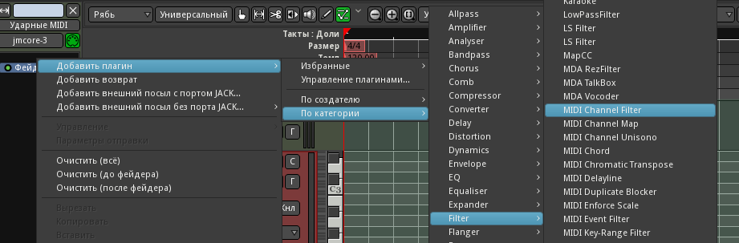

Подготовка партии баса (NoizeMak3r)
Попробуем подобрать бас, подходящий к нашим мягким глубоким бочкам. Используем плагин TAL Noize Mak3r - создадим MIDI-дорожку с ним, и дадим ей имя Бас MIDI.
Как и в случае с ударными, подключаем эту дорожку к шине - в данном случае к шине Басы. Матрицу маршрутизации можно вызвать, нажав на кнопку выходов линейки микшера Бас MIDI (над кнопкой Коментарии).
В комнате Пульт Claudia подключим эту дорожку к MIDI-входу, и проверим, идёт ли звук при нажатии клавиш на виртуальной или подключенной MIDI-клавиатуре. Сейчас параллельно с басом играют и ударники. Нужно их как-то отключить. Для этого используем MIDI-плагин mda MIDI Channel Filter.

- Выбираем дорожку Бас MIDI.
- Наводим курсор на верхнюю половину названия самого первого плагина (Noise Mak3r), чтобы новый плагин вставился перед ним.
- Нажимаем правую кнопку мыши и идём по меню: Добавить плагин->По категории->Filter->MIDI Channel Filter.
- Двойным щелчком по названию открываем вновь добавленный плагин.
- Отключаем все каналы, помимо первого.

Теперь канал Бас1 MIDI реагирует только на данные, передаваемые по первому каналу. Можно на всякий случай добавить такой же плагин на дорожку Ударные MIDI (перед Carla-Patchbay), только вместо первого оставить 10-й канал.
Открыв окно плагина NoiseMak3r и пробуем выбрать какой-нибудь из пресетов. Список очень велик и прокручивать его мышкой неудобно. Меню реагирует на кнопки Home/End/PgUp/PgDn, но, всё равно, переключать пресеты один за одним, одновременно играя на клавиатуре, не получится.
При желании можно было бы "обернуть" синтезатор и фильтр каналов в Carla-Rack (удалить оба, потом Добавить плагин->По категории->Plugin->Carla-Rack, затем добавить оба в стойку Carla). Там в окне параметров есть поле MIDI Program, в котором можно переберать пресеты кнопками вверх-вниз, одновременно пробуя их на MIDI-клавиатуре. Но они отображаются не все, а только те, что ниже ! Startup Juno OSC TAL.

Всё же, остановимся на варианте без лишних сложностей, и просто загрузим пресет BS No character bass 5, который позже немного подредактируем.